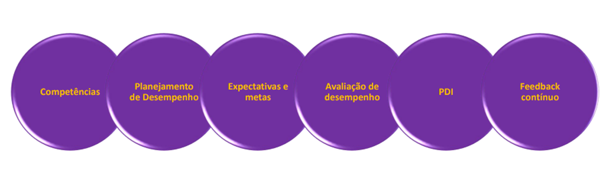

Vamos percorrer os conceitos da Gestão de Desempenho
Gestão de Desempenho: é a soma de competências, planejamento do desempenho, expectativas e metas claras, avaliação de desempenho e PDI (Plano Individual de Desenvolvimento), em um processo de feedback contínuo para promover novos comportamentos e atitudes, gerar alta performance e pleno comprometimento, a fim de propiciar melhores resultados.
Ela inicia com a definição das competências técnicas e comportamentais para cada cargo, sendo que as comportamentais essenciais para o bom desempenho do negócio, podem ser definidas pela instituição.
De posse dessas competências, o gestor estabelece o Planejamento de Desempenho, ou seja, estabelece a relação entre competências, responsabilidades e entregas previstas e se utiliza de ferramentas para estabelecer acordos e realizar acompanhamentos de sua equipe. Veja o gráfico abaixo.

Veja que a primeira parte trata-se de definição e planejamento e a segunda são efetivamente as ferramentas para rodar o que foi planejado. Esse é um processo contínuo que exige muita clareza e transparência para que tenha efetividade.
Abaixo apresentamos os conceitos das 3 ferramentas que você utilizará para a gestão e nas próximas páginas vamos detalhar um pouco mais o que as compõem e traremos dicas de como aplicá-las.
Avaliação de Desempenho
É uma etapa da gestão de desempenho que visa obter informações sobre a atuação técnica-comportamental, e a mensuração da contribuição do profissional nos resultados e objetivos institucionais, promovendo ações de desenvolvimento e melhoria contínua.
PDI (Plano de Desenvolvimento Individual)
O PDI define onde se pretende chegar e planeja as ações, prazos, métricas, entre outros fatores que permitirão o desenvolvimento e crescimento profissional e o alcance dos objetivos propostos. É uma ferramenta de melhoria contínua, que pode ser materializada através de planos de ação, e outras ferramentas que sistematizem o passo a passo. É um pilar fundamental para o sistema de desenvolvimento profissional, pois auxilia no fortalecimento de cada talento dentro da organização.
Feedback contínuo
Trata-se de uma resposta que os líderes dão para os seus liderados (e vice-versa) a respeito de seu desempenho na execução de determinadas tarefas e também no que se refere ao seu comportamento no trabalho. Em outras palavras, um retorno sobre o profissional no ambiente corporativo.
O objetivo do feedback é permitir que a outra parte tome conhecimento sobre sua performance e receba sugestões sobre os pontos que podem melhorar e assim consiga aplicar melhores práticas em seu dia a dia.
...